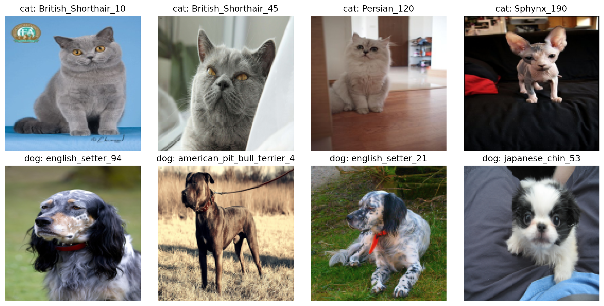
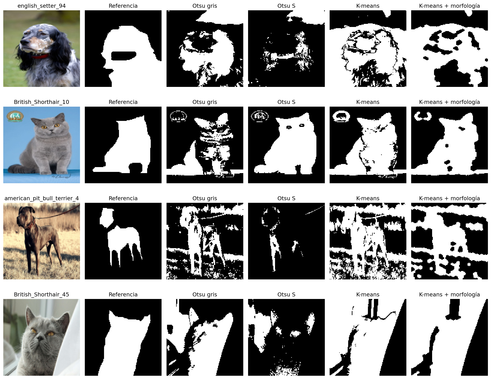
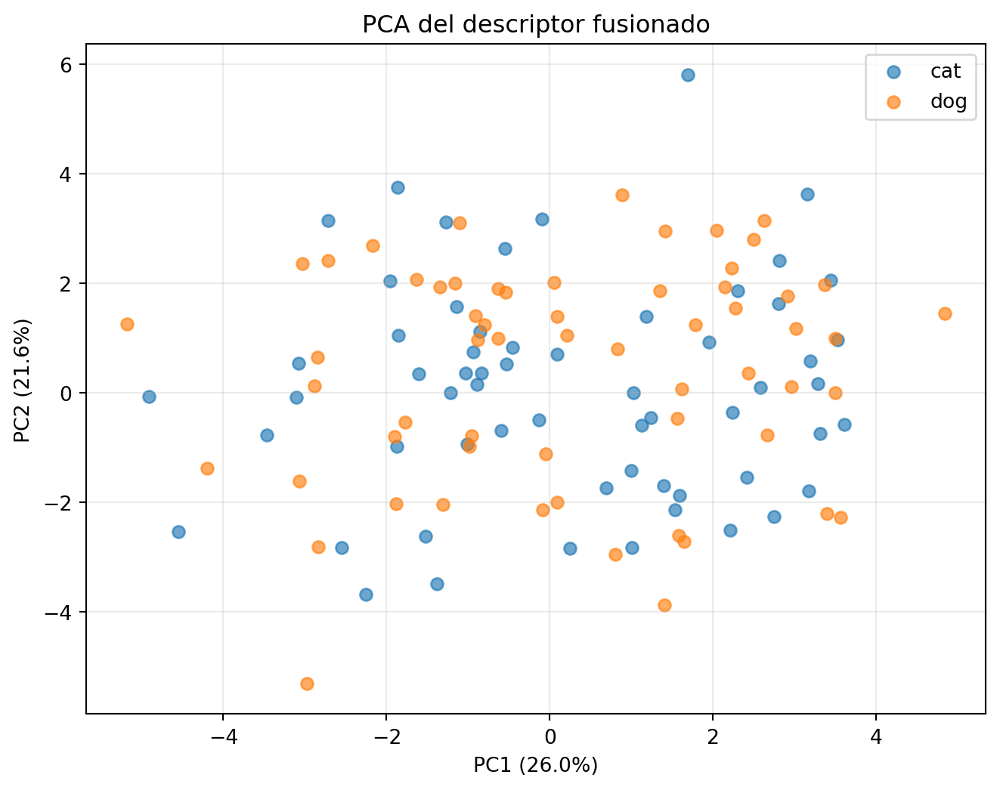
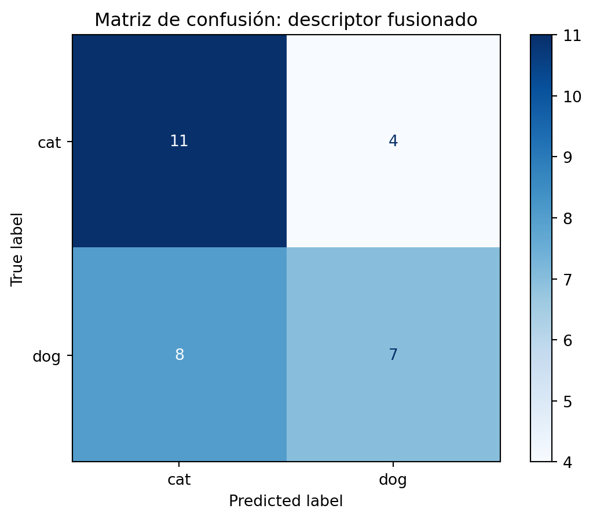
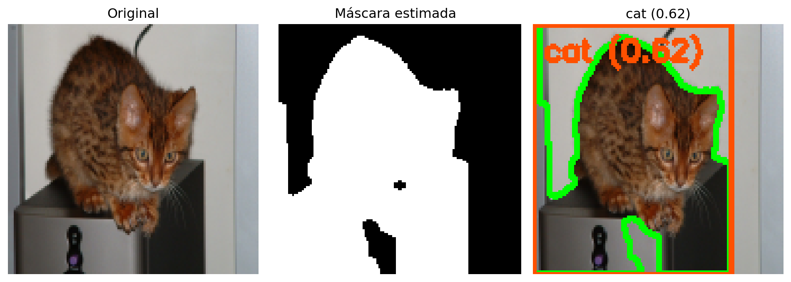

from pathlib import Path
import random
import tarfile
import urllib.request
import cv2
import matplotlib.pyplot as plt
import numpy as np
import pandas as pd
from skimage.feature import graycomatrix, graycoprops
from sklearn.decomposition import PCA
from sklearn.linear_model import LogisticRegression
from sklearn.metrics import (
accuracy_score,
classification_report,
confusion_matrix,
ConfusionMatrixDisplay,
f1_score,
)
from sklearn.model_selection import train_test_split
from sklearn.pipeline import Pipeline
from sklearn.preprocessing import StandardScaler
cv2.setRNGSeed(42)Actividad integradora: del píxel al reconocimiento de mascotas
1 Propósito
Esta práctica independiente cierra la Unidad 4 y conecta segmentación (Unidad 3) con descriptores, fusión de características y PCA (Unidad 4). El problema es distinguir perros de gatos mediante técnicas clásicas, inspeccionando los resultados intermedios y sus límites. No es una nueva actividad evaluada ni sustituye las actividades 4A o 5A.
El Oxford-IIIT Pet Dataset contiene 37 razas, imágenes variadas y anotaciones de especie, ROI de cabeza y segmentación tipo trimap (Parkhi et al. 2012a, 2012b). Aquí agruparemos las razas en dos especies. La clasificación por raza y la detección de múltiples mascotas quedan fuera del alcance. No se emplean CNN.
Nota
El dataset (aproximadamente 800 MB) no se incluye en esta página. Para ejecutar el notebook, descárgalo y crea junto a él la carpeta datos_ejemplo/oxford-iiit-pet/. Descarga allí images.tar.gz y annotations.tar.gz desde la página oficial y extrae ambos archivos en esa carpeta. Deben quedar las carpetas images/ y annotations/trimaps/. Se aplican los términos de la licencia CC BY-SA 4.0 (Parkhi et al. 2012b).
Recurso descargable: notebook ejecutable de la práctica
1.1 Pregunta de trabajo
¿En qué medida una segmentación clásica permite aislar al animal y qué familias de descriptores ayudan a diferenciar perros de gatos?
Al terminar, podrás inspeccionar imágenes y trimaps, comparar métodos de segmentación con IoU, calcular características de color/forma/textura, visualizar PCA y evaluar un clasificador clásico sin fuga de información.
2 Entorno y datos
Se requieren numpy, pandas, matplotlib, opencv-python, scikit-image y scikit-learn. Si hace falta, instala las dependencias en el entorno del curso antes de ejecutar el notebook.
La ruta de datos se busca junto al archivo que estás ejecutando, ya sea el QMD o el notebook descargado. La descarga automática permanece desactivada para evitar bajar cientos de megabytes sin confirmación.
def find_activity_dir():
candidates = (Path("."), Path("Unidad4"), Path("docs/Unidad4"))
filenames = (
"actividad_integral_mascotas_unidad4.qmd",
"actividad_integral_mascotas_unidad4.ipynb",
)
for candidate in candidates:
if any((candidate / filename).is_file() for filename in filenames):
return candidate
return Path(".")
ACTIVITY_DIR = find_activity_dir()
DATA_ROOT = ACTIVITY_DIR / "datos_ejemplo" / "oxford-iiit-pet"
IMAGE_DIR = DATA_ROOT / "images"
ANNOTATIONS_DIR = DATA_ROOT / "annotations"
if not (IMAGE_DIR / "Abyssinian_1.jpg").is_file() and (IMAGE_DIR / "images").is_dir():
IMAGE_DIR = IMAGE_DIR / "images"
if not (ANNOTATIONS_DIR / "trimaps").is_dir() and (ANNOTATIONS_DIR / "annotations" / "trimaps").is_dir():
ANNOTATIONS_DIR = ANNOTATIONS_DIR / "annotations"
TRIMAP_DIR = ANNOTATIONS_DIR / "trimaps"
IMAGES_URL = "https://thor.robots.ox.ac.uk/~vgg/data/pets/images.tar.gz"
ANNOTATIONS_URL = "https://thor.robots.ox.ac.uk/~vgg/data/pets/annotations.tar.gz"
DOWNLOAD_DATA = FalseLa extracción valida que los miembros del archivo permanezcan dentro de la carpeta de destino.
def safe_extract_tar(archive_path, destination):
destination = destination.resolve()
with tarfile.open(archive_path, "r:gz") as archive:
for member in archive.getmembers():
target = (destination / member.name).resolve()
if target != destination and destination not in target.parents:
raise ValueError(f"Ruta no permitida en el archivo: {member.name}")
archive.extractall(destination)
def download_and_extract(url, archive_name):
DATA_ROOT.mkdir(parents=True, exist_ok=True)
archive_path = DATA_ROOT / archive_name
if not archive_path.exists():
urllib.request.urlretrieve(url, archive_path)
safe_extract_tar(archive_path, DATA_ROOT)
if DOWNLOAD_DATA and not (IMAGE_DIR.exists() and TRIMAP_DIR.exists()):
download_and_extract(IMAGES_URL, "images.tar.gz")
download_and_extract(ANNOTATIONS_URL, "annotations.tar.gz")
if not (IMAGE_DIR.exists() and TRIMAP_DIR.exists()):
raise FileNotFoundError(
"No se encontró Oxford-IIIT Pet. Descarga y extrae images.tar.gz y "
"annotations.tar.gz en DATA_ROOT, junto al notebook, o activa DOWNLOAD_DATA."
)El nombre de archivo codifica la raza. El conjunto tiene 12 razas de gato; las otras 25 corresponden a perros.
CAT_BREEDS = {
"Abyssinian", "Bengal", "Birman", "Bombay", "British_Shorthair",
"Egyptian_Mau", "Maine_Coon", "Persian", "Ragdoll", "Russian_Blue",
"Siamese", "Sphynx",
}
VALID_EXTENSIONS = {".jpg", ".jpeg", ".png"}
def species_from_path(image_path):
breed = image_path.stem.rsplit("_", 1)[0]
if breed in CAT_BREEDS:
return "cat"
return "dog"
def list_pet_images(max_per_species=60, seed=42):
grouped = {"cat": [], "dog": []}
for path in sorted(IMAGE_DIR.iterdir()):
if path.suffix.lower() in VALID_EXTENSIONS:
trimap_path = TRIMAP_DIR / f"{path.stem}.png"
if trimap_path.exists():
grouped[species_from_path(path)].append(path)
rng = random.Random(seed)
selected = []
for species, paths in grouped.items():
if len(paths) < max_per_species:
raise ValueError(f"Hay {len(paths)} imágenes de {species}; se esperaban {max_per_species}.")
rng.shuffle(paths)
selected.extend((path, species) for path in paths[:max_per_species])
rng.shuffle(selected)
return selected
records = list_pet_images(max_per_species=60, seed=42)
labels = np.array([species for _, species in records])
pd.Series(labels).value_counts()dog 60
cat 60
Name: count, dtype: int643 Exploración
Carga las imágenes en RGB y redimensiónalas para hacer comparables los cálculos. Las trimaps se redimensionan con vecino más cercano para no inventar etiquetas intermedias.
IMAGE_SIZE = (128, 128)
def read_rgb(image_path, size=IMAGE_SIZE):
image_bgr = cv2.imread(str(image_path))
if image_bgr is None:
raise ValueError(f"No se pudo leer la imagen: {image_path}")
image_rgb = cv2.cvtColor(image_bgr, cv2.COLOR_BGR2RGB)
return cv2.resize(image_rgb, size, interpolation=cv2.INTER_AREA)
def read_trimap(image_path, size=IMAGE_SIZE):
trimap_path = TRIMAP_DIR / f"{image_path.stem}.png"
trimap = cv2.imread(str(trimap_path), cv2.IMREAD_GRAYSCALE)
if trimap is None:
raise ValueError(f"No se pudo leer la trimap: {trimap_path}")
return cv2.resize(trimap, size, interpolation=cv2.INTER_NEAREST)
fig, axes = plt.subplots(2, 4, figsize=(12, 6))
for row, species in enumerate(("cat", "dog")):
examples = [path for path, label in records if label == species][:4]
for col, path in enumerate(examples):
axes[row, col].imshow(read_rgb(path))
axes[row, col].set_title(f"{species}: {path.stem}")
axes[row, col].axis("off")
plt.tight_layout()
plt.show()
Para discutir: ¿qué cambia entre imágenes de una misma especie? ¿Cuánto espacio ocupa el animal? ¿Qué partes del fondo podrían confundir una segmentación por color?
4 Segmentación clásica
La trimap usa los valores 1 (primer plano), 2 (fondo) y 3 (borde incierto). Para calcular IoU ignoraremos los píxeles de borde. En los métodos automáticos, elegimos una máscara candidata usando el supuesto simple de que el fondo aparece con mayor frecuencia en el perímetro de la imagen. Es una heurística, no una regla universal.
def choose_foreground_polarity(binary_mask):
candidates = [binary_mask > 0, binary_mask == 0]
border = np.zeros(binary_mask.shape, dtype=bool)
border[[0, -1], :] = True
border[:, [0, -1]] = True
def score(mask):
area = float(mask.mean())
border_fraction = float(mask[border].mean())
area_penalty = max(0.0, 0.03 - area) + max(0.0, area - 0.95)
return border_fraction + 0.15 * abs(area - 0.45) + area_penalty
return min(candidates, key=score).astype(np.uint8) * 255
def segment_otsu(image_rgb, channel="gray"):
if channel == "saturation":
source = cv2.cvtColor(image_rgb, cv2.COLOR_RGB2HSV)[:, :, 1]
else:
source = cv2.cvtColor(image_rgb, cv2.COLOR_RGB2GRAY)
_, binary = cv2.threshold(source, 0, 255, cv2.THRESH_BINARY + cv2.THRESH_OTSU)
return choose_foreground_polarity(binary)
def segment_kmeans(image_rgb, clusters=3):
lab = cv2.cvtColor(image_rgb, cv2.COLOR_RGB2LAB)
pixels = np.float32(lab.reshape(-1, 3))
criteria = (cv2.TERM_CRITERIA_EPS + cv2.TERM_CRITERIA_MAX_ITER, 30, 0.5)
_, labels_flat, _ = cv2.kmeans(
pixels, clusters, None, criteria, 1, cv2.KMEANS_PP_CENTERS
)
labels = labels_flat.reshape(image_rgb.shape[:2])
border = np.zeros(labels.shape, dtype=bool)
border[[0, -1], :] = True
border[:, [0, -1]] = True
background_label = int(np.bincount(labels[border].ravel()).argmax())
return (labels != background_label).astype(np.uint8) * 255
def clean_mask(mask):
kernel = cv2.getStructuringElement(cv2.MORPH_ELLIPSE, (5, 5))
opened = cv2.morphologyEx(mask, cv2.MORPH_OPEN, kernel)
return cv2.morphologyEx(opened, cv2.MORPH_CLOSE, kernel)
def iou_trimap(predicted_mask, trimap):
"""IoU sobre píxeles anotados; se excluye el borde incierto (valor 3)."""
valid = trimap != 3
predicted = (predicted_mask > 0) & valid
reference = (trimap == 1) & valid
union = np.logical_or(predicted, reference).sum()
if union == 0:
return float("nan")
return float(np.logical_and(predicted, reference).sum() / union)# Compara Otsu en gris, Otsu en saturación y agrupamiento K-means en imágenes de muestra.
sample_paths = [path for path, _ in records[:4]]
fig, axes = plt.subplots(len(sample_paths), 6, figsize=(15, 3 * len(sample_paths)))
for row, path in enumerate(sample_paths):
image = read_rgb(path)
trimap = read_trimap(path)
masks = [
(trimap == 1).astype(np.uint8) * 255,
segment_otsu(image, "gray"),
segment_otsu(image, "saturation"),
segment_kmeans(image),
clean_mask(segment_kmeans(image)),
]
titles = ["Referencia", "Otsu gris", "Otsu S", "K-means", "K-means + morfología"]
axes[row, 0].imshow(image)
axes[row, 0].set_title(path.stem)
axes[row, 0].axis("off")
for col, (mask, title) in enumerate(zip(masks, titles), start=1):
axes[row, col].imshow(mask, cmap="gray", vmin=0, vmax=255)
axes[row, col].set_title(title)
axes[row, col].axis("off")
plt.tight_layout()
plt.show()
Calcula IoU sobre un subconjunto fijo. Un valor bajo no significa que el algoritmo esté mal implementado: puede indicar que el supuesto de fondo en el borde falla para esa fotografía.
segmentation_rows = []
for image_path, species in records:
image = read_rgb(image_path)
trimap = read_trimap(image_path)
for method, mask in {
"Otsu gris": segment_otsu(image, "gray"),
"Otsu saturación": segment_otsu(image, "saturation"),
"K-means": segment_kmeans(image),
"K-means + morfología": clean_mask(segment_kmeans(image)),
}.items():
segmentation_rows.append({
"species": species,
"method": method,
"IoU": iou_trimap(mask, trimap),
})
segmentation_results = pd.DataFrame(segmentation_rows)
segmentation_results.groupby("method")["IoU"].agg(["mean", "median", "std"]).sort_values("mean", ascending=False)| mean | median | std | |
|---|---|---|---|
| method | |||
| K-means + morfología | 0.456339 | 0.448868 | 0.236271 |
| K-means | 0.444450 | 0.432150 | 0.226010 |
| Otsu gris | 0.432037 | 0.437369 | 0.246348 |
| Otsu saturación | 0.353830 | 0.311675 | 0.292175 |
Preguntas: ¿qué método logra mayor IoU medio? ¿La media oculta casos de fallo? ¿Qué efecto tuvo la morfología en las máscaras?
5 Descriptores y matriz de características
Para mantener una comparación justa, usaremos la misma máscara K-means limpiada en todos los ejemplos, tanto al entrenar como al probar. Los descriptores de color resumen los píxeles segmentados; Hu describe forma y GLCM textura. La segmentación de prueba se calcula sin consultar la trimap: esta se reserva para evaluar segmentación.
def extract_feature_blocks(image_rgb, mask):
foreground = mask > 0
if foreground.sum() < 20:
foreground = np.ones(mask.shape, dtype=bool)
color_values = image_rgb[foreground].astype(np.float32)
color_features = np.concatenate([color_values.mean(axis=0), color_values.std(axis=0)])
moments = cv2.moments((foreground.astype(np.uint8) * 255))
hu = cv2.HuMoments(moments).flatten()
shape_features = -np.sign(hu) * np.log10(np.abs(hu) + 1e-12)
gray = cv2.cvtColor(image_rgb, cv2.COLOR_RGB2GRAY)
ys, xs = np.where(foreground)
y0, y1 = ys.min(), ys.max() + 1
x0, x1 = xs.min(), xs.max() + 1
gray_crop = gray[y0:y1, x0:x1].copy()
mask_crop = foreground[y0:y1, x0:x1]
fill_value = int(np.median(gray_crop[mask_crop]))
gray_crop[~mask_crop] = fill_value
quantized = np.clip(gray_crop.astype(np.uint16) * 8 // 256, 0, 7).astype(np.uint8)
glcm = graycomatrix(
quantized,
distances=[1, 3],
angles=[0, np.pi / 4],
levels=8,
symmetric=True,
normed=True,
)
texture_features = np.array([
graycoprops(glcm, prop).mean()
for prop in ("contrast", "dissimilarity", "homogeneity", "energy", "correlation")
], dtype=np.float64)
return color_features, shape_features, texture_features
feature_rows = []
for image_path, species in records:
image = read_rgb(image_path)
mask = clean_mask(segment_kmeans(image))
color_features, shape_features, texture_features = extract_feature_blocks(image, mask)
feature_rows.append({
"path": image_path,
"species": species,
"color": color_features,
"shape": shape_features,
"texture": texture_features,
"fused": np.concatenate([color_features, shape_features, texture_features]),
})
features = pd.DataFrame(feature_rows)
y = features["species"].to_numpy()
X_blocks = {name: np.vstack(features[name]) for name in ("color", "shape", "texture", "fused")}
{key: value.shape for key, value in X_blocks.items()}{'color': (120, 6), 'shape': (120, 7), 'texture': (120, 5), 'fused': (120, 18)}6 PCA y reconocimiento clásico
Separamos los índices antes de ajustar escaladores, PCA o clasificadores. Cada configuración usa exactamente la misma división estratificada.
indices = np.arange(len(y))
train_indices, test_indices = train_test_split(
indices, test_size=0.25, stratify=y, random_state=42
)
models = {}
metric_rows = []
for name, X in X_blocks.items():
model = Pipeline([
("scaler", StandardScaler()),
("classifier", LogisticRegression(max_iter=2000, random_state=42)),
])
model.fit(X[train_indices], y[train_indices])
predictions = model.predict(X[test_indices])
models[name] = model
metric_rows.append({
"descriptor": name,
"accuracy": accuracy_score(y[test_indices], predictions),
"macro_f1": f1_score(y[test_indices], predictions, average="macro"),
})
pd.DataFrame(metric_rows).sort_values("macro_f1", ascending=False)| descriptor | accuracy | macro_f1 | |
|---|---|---|---|
| 0 | color | 0.666667 | 0.666667 |
| 3 | fused | 0.600000 | 0.592760 |
| 1 | shape | 0.566667 | 0.566185 |
| 2 | texture | 0.500000 | 0.499444 |
El siguiente PCA se ajusta únicamente con entrenamiento y después proyecta todos los puntos. PCA ayuda a visualizar estructura, pero dos componentes no garantizan separar las especies.
X_fused = X_blocks["fused"]
scaler = StandardScaler().fit(X_fused[train_indices])
X_train_scaled = scaler.transform(X_fused[train_indices])
X_all_scaled = scaler.transform(X_fused)
pca = PCA(n_components=2, random_state=42).fit(X_train_scaled)
projection = pca.transform(X_all_scaled)
fig, ax = plt.subplots(figsize=(8, 6))
for species in ("cat", "dog"):
selected = y == species
ax.scatter(projection[selected, 0], projection[selected, 1], label=species, alpha=0.65)
ax.set_xlabel(f"PC1 ({pca.explained_variance_ratio_[0] * 100:.1f}%)")
ax.set_ylabel(f"PC2 ({pca.explained_variance_ratio_[1] * 100:.1f}%)")
ax.set_title("PCA del descriptor fusionado")
ax.legend()
ax.grid(True, alpha=0.25)
plt.show()
Evalúa el descriptor fusionado y analiza la matriz de confusión. El propósito no es obtener un resultado perfecto, sino razonar sobre los errores y las decisiones que los producen.
final_model = models["fused"]
test_predictions = final_model.predict(X_fused[test_indices])
print(classification_report(y[test_indices], test_predictions, digits=3))
ConfusionMatrixDisplay.from_predictions(
y[test_indices], test_predictions, labels=["cat", "dog"], cmap="Blues"
)
plt.title("Matriz de confusión: descriptor fusionado")
plt.show() precision recall f1-score support
cat 0.579 0.733 0.647 15
dog 0.636 0.467 0.538 15
accuracy 0.600 30
macro avg 0.608 0.600 0.593 30
weighted avg 0.608 0.600 0.593 30

7 Pipeline final y análisis de errores
La función recibe una ruta, vuelve a ejecutar la segmentación clásica y devuelve imagen anotada, máscara, especie y confianza. El rectángulo mostrado se calcula desde la máscara segmentada; no es la ROI de cabeza publicada por Oxford.
def identify_pet(image_path, model=final_model):
image = read_rgb(image_path)
mask = clean_mask(segment_kmeans(image))
color_features, shape_features, texture_features = extract_feature_blocks(image, mask)
vector = np.concatenate([color_features, shape_features, texture_features]).reshape(1, -1)
prediction = model.predict(vector)[0]
confidence = float(model.predict_proba(vector).max())
annotated = image.copy()
contours, _ = cv2.findContours(mask, cv2.RETR_EXTERNAL, cv2.CHAIN_APPROX_SIMPLE)
if contours:
largest = max(contours, key=cv2.contourArea)
x, y_box, width, height = cv2.boundingRect(largest)
cv2.drawContours(annotated, [largest], -1, (0, 255, 0), 2)
cv2.rectangle(annotated, (x, y_box), (x + width, y_box + height), (255, 80, 0), 2)
cv2.putText(
annotated,
f"{prediction} ({confidence:.2f})",
(5, 18),
cv2.FONT_HERSHEY_SIMPLEX,
0.5,
(255, 80, 0),
2,
)
return {"image": annotated, "mask": mask, "species": prediction, "confidence": confidence}
example_path = features.iloc[test_indices[0]]["path"]
result = identify_pet(example_path)
fig, axes = plt.subplots(1, 3, figsize=(10, 4))
axes[0].imshow(read_rgb(example_path)); axes[0].set_title("Original"); axes[0].axis("off")
axes[1].imshow(result["mask"], cmap="gray"); axes[1].set_title("Máscara estimada"); axes[1].axis("off")
axes[2].imshow(result["image"]); axes[2].set_title(f"{result['species']} ({result['confidence']:.2f})"); axes[2].axis("off")
plt.tight_layout()
plt.show()
Examina también errores del conjunto de prueba. ¿La máscara omitió parte del animal? ¿El recorte incluye demasiado fondo? ¿El clasificador confunde una especie aun cuando la segmentación es razonable? Son fallos distintos y requieren revisar etapas distintas.
wrong = test_indices[test_predictions != y[test_indices]]
wrong[:10], len(wrong)(array([ 70, 85, 9, 87, 119, 40, 16, 77, 11, 27]), 12)8 Cierre
El flujo ilustra la transición entre segmentación, descripción y clasificación. La máscara automática depende de supuestos sencillos sobre el fondo; la referencia permite cuantificar sus límites. El resultado del clasificador, a su vez, depende tanto de la representación elegida como de la calidad de la segmentación.
Para reflexionar: ¿qué cambiaría al clasificar por raza en lugar de especie? ¿Qué mejoras probarías sin abandonar las técnicas clásicas del curso?
9 Referencias
La publicación original y la página del dataset están citadas en el texto; sus registros completos se encuentran en referencias.bib.
Referencias
Parkhi, Omkar M., Andrea Vedaldi, Andrew Zisserman, y C. V. Jawahar. 2012a. «Cats and Dogs». IEEE Conference on Computer Vision and Pattern Recognition.
Parkhi, Omkar M., Andrea Vedaldi, Andrew Zisserman, y C. V. Jawahar. 2012b. The Oxford-IIIT Pet Dataset. https://www.robots.ox.ac.uk/~vgg/data/pets/.